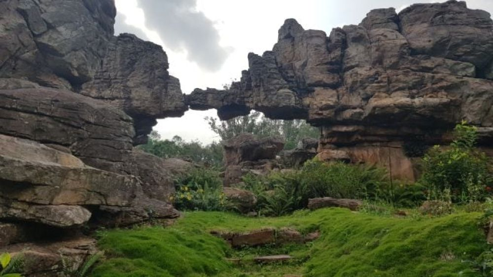
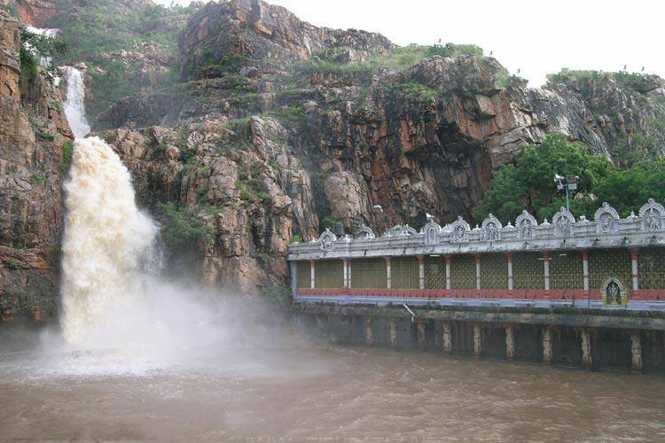
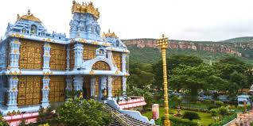

Tirumala, located in Andhra Pradesh, India, is home to the revered Tirumala Venkateswara Temple. Dating back to ancient times, this temple is dedicated to Lord Venkateswara, an incarnation of Lord Vishnu. It has been a significant pilgrimage site for centuries, attracting millions of devotees annually. The temple's rich history is intertwined with legends and contributions from various dynasties, including the Pallavas, Cholas, and Vijayanagara Empire, making it a symbol of religious and cultural heritage.
Main Attractions
Sri Venkateswara Temple: The main temple dedicated to Lord Balaji, known for its immense spiritual significance and architectural structure.
Akasa Ganga: A sacred waterfall believed to have divine origins, where ritual ablutions are performed for Lord Venkateswara.
Srivari Padalu: The revered spot where Lord Venkateswara is believed to have first set his divine feet on earth, marked by footprints.
Kapila Teertham: It is a sacred Shaiva temple in Tirupati dedicated to Lord Shiva as Kapileswara, believed to have been installed by sage Kapila.
Silathoranam: A unique natural rock formation resembling an arch and is believed that the original idol is of the same height as Silathoranam.
Iskcon: A temple rn by hindu religious organization promoting devotion to Lord Krishna and it features Lord Krishna with Radha Rani and 8 gopikas.



Best Time to Visit
The best time to visit Tirumala is from September to February. During this period, the weather is relatively mild and pleasant, making it ideal for both darshan and sightseeing. The region experiences occasional showers, which add to the natural beauty of the surroundings.
Winter (October to February): This is the most popular time to visit Tirumala. The weather is cool and comfortable, and the festive season adds an extra layer of spirituality to the atmosphere.
Monsoon (July to September): The monsoon season brings a refreshing change with green surroundings and cooler temperatures. Although there might be occasional rains, the crowd is less compared to peak seasons.
Summer (March to June): Summers in Tirumala can be quite hot, with temperatures soaring up to 42°C. While the nights are more relaxed, it's advisable to avoid visiting during this time due to the sweltering heat.
Avoid visiting Tirumala during major Hindu festivals like Diwali, Dussehra, and New Year’s Day, as these occasions attract large crowds and longer waiting times for darshan.
Sevas in Tirumala
Various sevas (rituals) are performed in Tirumala to offer prayers to Lord Venkateswara. Devotees can participate in these sevas by booking them in advance.
Suprabhata Seva: An early morning ritual where the priests gently wake up Lord Venkateswara with the chanting of hymns and the recitation of Suprabhatam, a devotional poem. This service signifies the start of the day's rituals and is considered auspicious for devotees to witness.
Archana Seva: A special prayer service where the priests perform the chanting of the 1,008 (Sahasranama Archana) or 108 (Ashtottara Shatanama Archana) names of Lord Venkateswara. Devotees offer their names, gotras, and nakshatras for inclusion in the prayers, seeking the Lord's blessings for prosperity, health, and happiness.
Abhishekam: The ritual bathing of the deity with various sacred substances such as water, milk, curd, honey, turmeric, and sandalwood paste. This ceremony is performed to purify the idol and is accompanied by Vedic chants and hymns. It symbolizes the devotee's love and reverence for the Lord, with each substance representing different attributes.
Kalyanotsavam: A grand symbolic wedding ceremony of Lord Venkateswara with Goddess Lakshmi and Goddess Padmavati. This ritual signifies the divine union and is celebrated with great pomp and joy. Devotees believe that witnessing this ceremony brings marital bliss, prosperity, and harmony in their own lives.
Vasanthotsavam: A vibrant spring festival that celebrates the divine presence of Lord Venkateswara. During this festival, the idols of the deities are taken out in a procession and offered floral tributes, symbolizing the rejuvenation and renewal of life. The festival includes various cultural programs and rituals, spreading joy and positivity among the devotees
Seva Name
Seva Time
Cost (₹)
Suprabhatam
2:30 AM – 3:00 AM
120
Thomala Seva
3:30 AM – 4:00 AM
220
Archana
4:15 AM – 5:00 AM
220
Kalyanotsavam
10:00 AM – 1:00 PM
1,000
Vasanthotsavam
3:00 PM – 4:00 PM
300
Sahasra Deepalankara Seva
5:30 PM – 6:30 PM
200
Visesha Puja
Monday || 5:30 AM – 7:00 AM
600
Ashtadala Pada Padmaradhana
Tuesday || 6:00 AM – 7:00 AM
300
Sahasra Kalasabhishekam
Wednesday || 6:00 AM – 8:00 AM
750
Tiruppavada Seva
Thursday || 6:00 AM – 7:00 AM
850
Abhishekam
Friday || 3:30 AM – 5:00 AM
750
How to Reach Tirumala
Mode of Transport
Nearest Point
Distance
Air
Tirupati Airport
40 km
Train
Tirupati Railway Station
26 km
Road
Bus from various cities
Accessible by road
Darshan Options
₹300 Special Entry Darshan:
Booking Process: Devotees can book this darshan through the official TTD website or designated counters. Online booking is recommended to avoid last-minute rush.
Benefits: It significantly reduces the waiting time, allowing devotees to have a more peaceful and less stressful darshan experience.
Popularity: This option is popular among those who prefer a quicker darshan and are willing to pay a nominal fee for the convenience.
SRIVANI Trust Darshan:
Donor Privileges: Donors contributing to the SRIVANI Trust are given priority access for darshan. They also receive special recognition and blessings.
Purpose of the Trust: The SRIVANI Trust focuses on the renovation and construction of temples. Contributions to the trust help in preserving the heritage and promoting religious activities.
Eligibility: Only those who have made a specified donation to the trust are eligible for this premium darshan.
Child Darshan:
Convenience for Families: This darshan is specifically designed for families with young children. It ensures that children can experience the darshan without being overwhelmed by the crowd.
Procedure: Parents can avail this facility by showing valid identification and proof of the child's age at the entry point.
Differently Abled / Senior Citizen Darshan:
Special Facilities: This includes dedicated entry points, wheelchair assistance, and seating arrangements to ensure a smooth and comfortable darshan experience.
Timings: There are specific time slots allotted for this category of devotees to avoid congestion and provide better access.
Companions: Typically, one or two companions are allowed to accompany the differently-abled or senior citizens to assist them during the darshan.
SVBC Channel
Programming Variety: Apart from live broadcasts of temple rituals, SVBC features programs on devotional music, spiritual discourses, cultural events, and interviews with religious scholars.
Educational Content: The channel also offers educational content that delves into the history, traditions, and significance of various rituals and festivals associated with the temple.
Language Options: SVBC caters to a diverse audience with programs available in multiple languages, ensuring a wider reach and inclusivity.
Online Presence: The channel has a strong online presence, with live streaming available on its official website and mobile applications. This allows devotees to stay connected and participate in the spiritual journey from anywhere in the world.
Community Engagement: SVBC also promotes community involvement by featuring local events, pilgrimages, and activities organized by devotees and religious organizations.
Live streaming: You can watch live in TV Broadcast or in youtube channel. Click here for the link SVBC Channel